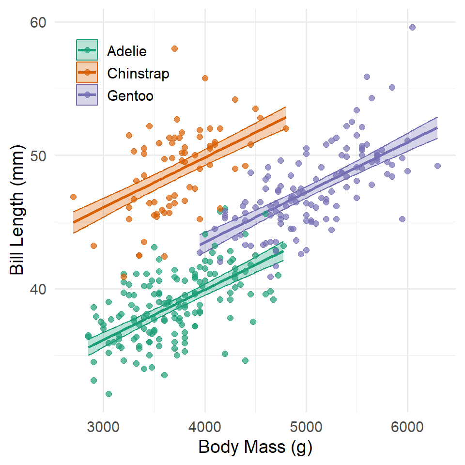
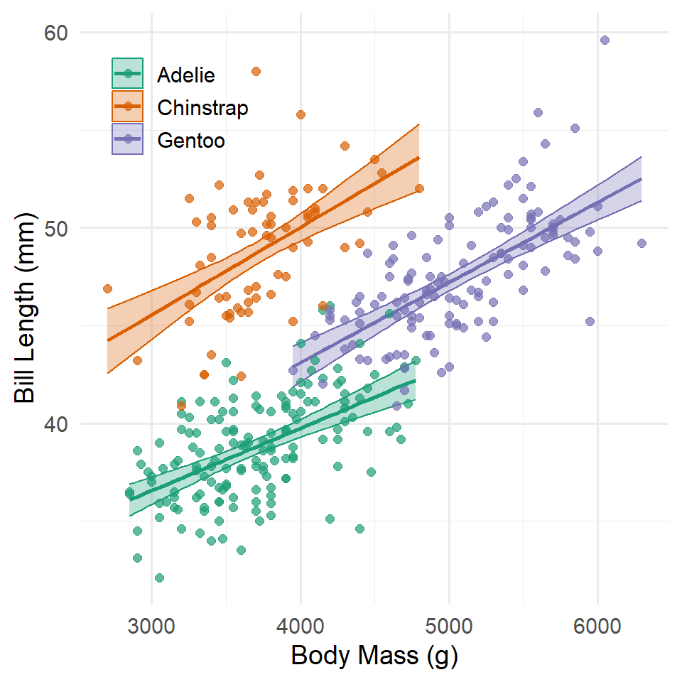
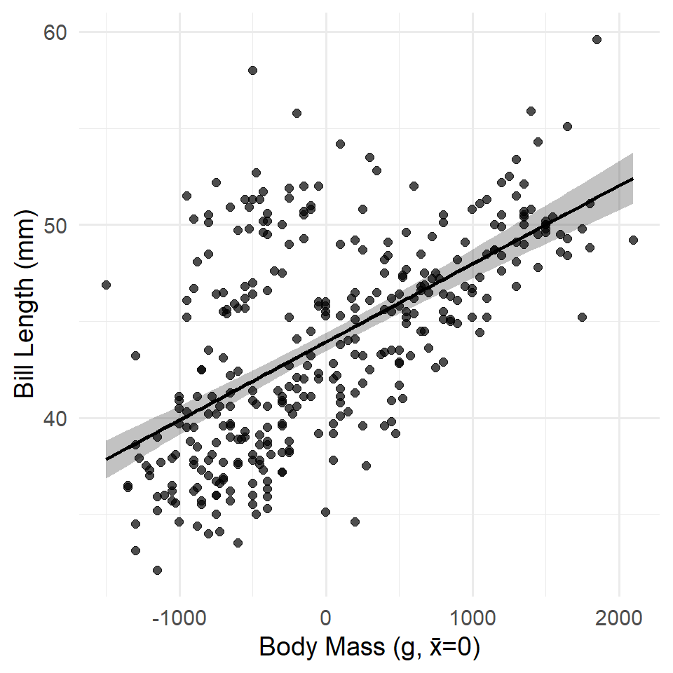
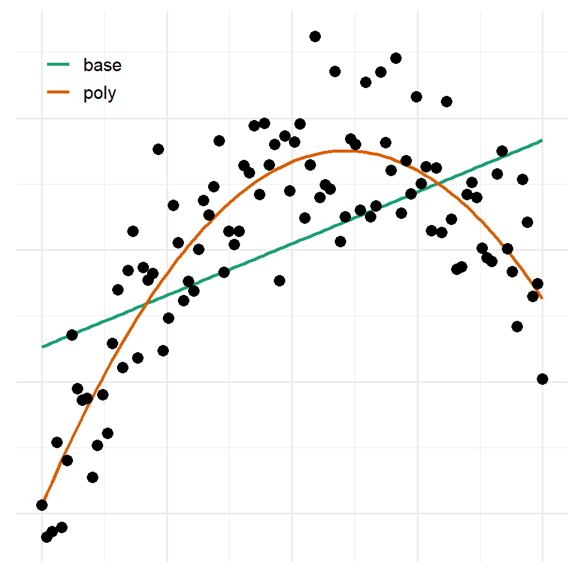

Lab 10: Transforming Variables
(Stats) Learn how to add qualitative variables and transformed variables to linear models and interpret the results. (R) Scaling and centering variables, specifying model formulas to include intercept offsets, interactions, log transforms, and polynomial terms.
Outline
Objectives
This lab will guide you through the process of
- adding qualitative variables to a model
- intercept offset
- interaction terms
- centering and scaling variables
- other transforms
- polynomials
- logarithm
R Packages
We will be using the following packages:
Data
-
penguins- Includes measurements for penguin species, island in Palmer Archipelago, size (flipper length, body mass, bill dimensions), and sex.
- package:
palmerpenguins - reference: https://allisonhorst.github.io/palmerpenguins/reference/penguins.html
Qualitative Variables
Shade-loving plants thrive in areas that get less sunlight. Sun-loving plants thrive in areas that get more. This is a fairly intuitive and uncontroversial idea, but how would we incorporate this kind of difference between groups into a linear model? In R, we use dummy variables that re-code a qualitative variable into a numeric variable with two values, zero for the reference group (every member of this group has value zero) and one for the comparison group (every member of this group has value one). For a qualitative variable with m categories, it takes \(m-1\) dummy variables to code it. You can do this manually if you like, but R will do it for you, too. All you need to do is include the qualitative variable in the model formula. This can be done in one of two ways: either by adding the variable with + or multiplying the variable with *. The first allows the intercept to change for each group, the second allows the intercept and slope to change.
Let’s look at the penguins data to see how this works.
lm_base <- lm(bill_length_mm ~ body_mass_g, data = penguins)
summary(lm_base)
#>
#> Call:
#> lm(formula = bill_length_mm ~ body_mass_g, data = penguins)
#>
#> Residuals:
#> Min 1Q Median 3Q Max
#> -10.125 -3.043 -0.809 2.071 16.111
#>
#> Coefficients:
#> Estimate Std. Error t value Pr(>|t|)
#> (Intercept) 26.898872 1.269148 21.2 <0.0000000000000002 ***
#> body_mass_g 0.004051 0.000297 13.6 <0.0000000000000002 ***
#> ---
#> Signif. codes: 0 '***' 0.001 '**' 0.01 '*' 0.05 '.' 0.1 ' ' 1
#>
#> Residual standard error: 4.39 on 340 degrees of freedom
#> (2 observations deleted due to missingness)
#> Multiple R-squared: 0.354, Adjusted R-squared: 0.352
#> F-statistic: 186 on 1 and 340 DF, p-value: <0.0000000000000002Here we have a perfectly respectable model of a familiar allometric relationship between length and weight. Both the intercept and the coefficient for body mass are significant, and it explains 35% of the variation in bill length, but can we do better?
Intercept Offset
Maybe some species have longer bills on average than other species. To incorporate this idea, we can add a constant offset to the intercept representing the difference in mean bill length for each species. This is done by adding the species variable in the formula.
lm_species_offset <- lm(
bill_length_mm ~ body_mass_g + species,
data = penguins
)
summary(lm_species_offset)
#>
#> Call:
#> lm(formula = bill_length_mm ~ body_mass_g + species, data = penguins)
#>
#> Residuals:
#> Min 1Q Median 3Q Max
#> -6.813 -1.672 0.134 1.472 9.290
#>
#> Coefficients:
#> Estimate Std. Error t value Pr(>|t|)
#> (Intercept) 24.919471 1.063003 23.44 < 0.0000000000000002 ***
#> body_mass_g 0.003748 0.000282 13.28 < 0.0000000000000002 ***
#> speciesChinstrap 9.920884 0.351079 28.26 < 0.0000000000000002 ***
#> speciesGentoo 3.557978 0.485790 7.32 0.0000000000018 ***
#> ---
#> Signif. codes: 0 '***' 0.001 '**' 0.01 '*' 0.05 '.' 0.1 ' ' 1
#>
#> Residual standard error: 2.4 on 338 degrees of freedom
#> (2 observations deleted due to missingness)
#> Multiple R-squared: 0.808, Adjusted R-squared: 0.806
#> F-statistic: 474 on 3 and 338 DF, p-value: <0.0000000000000002Hello! This model explains 80% of the variance and it’s coefficients are all significant. But, is the difference between this more complex, species-sensitive model and the simpler, species-insensitive model real or just a happy accident? As always, we can perform an ANOVA to find out.
anova(lm_base, lm_species_offset)
#> Analysis of Variance Table
#>
#> Model 1: bill_length_mm ~ body_mass_g
#> Model 2: bill_length_mm ~ body_mass_g + species
#> Res.Df RSS Df Sum of Sq F Pr(>F)
#> 1 340 6564
#> 2 338 1952 2 4613 399 <0.0000000000000002 ***
#> ---
#> Signif. codes: 0 '***' 0.001 '**' 0.01 '*' 0.05 '.' 0.1 ' ' 1With a p-value really, really closer to zero, the answer is Yes, the species-sensitive model with a constant offset does indeed explain significantly more of the variance in bill length than we would expect by chance.
How do we interpret this model? If you look at the coefficients table, you’ll see there are four terms there, not two. Of course, there’s the intercept estimate and the coefficient for body mass, but there are also two species terms, speciesChinstrap and speciesGentoo.1 If you recall, however, there are actually three penguin species in the data.
1 The first part of the term is the actual variable name, in this case species, and the second part of the term represents the unique values of the variable, here Chinstrap and Gentoo.
unique(penguins$species)
#> [1] Adelie Gentoo Chinstrap
#> Levels: Adelie Chinstrap GentooWhere did Adelie go? Adelie is actually the reference class in the model! That means it’s always coded as a zero when the model builds dummy variables for the other species, so the term (Intercept) in the summary table is actually the intercept estimate for Adelie penguins. In this case, it tells you what the average bill length is for Adelie penguins when (impossibly) body mass equals zero. The other two species terms then tell you how different the intercepts are for the other species. For instance, speciesChinstrap has an estimate of 9.92, that means when body mass equals zero, Chinstrap penguins on average have a bill length 9.92 mm longer than Adelie penguins. Similarly, Gentoo penguins have a bill length 3.56 mm longer than Adelie penguins on average.
If we were to write out the model formula for this with the dummy variables and coefficients, it would look like this:
\[y_i = (\beta_{0} + \gamma_{1} D_{1i} + \gamma_{2} D_{2i}) + \beta_{1}x_{i} + \epsilon_{i}\]
Here, \(D_{1i}\) would take a value 1 if penguin \(i\) is a Chinstrap penguin and 0 otherwise, and \(D_{2i}\) would take a value 1 if penguin \(i\) is a Gentoo penguin and 0 otherwise. That means, if \(i\) is an Adelie penguin, both \(D_{1}\) and \(D_{2}\) equal zero, and the model simplifies to
\[y_i = \beta_{0} + \beta_{1}x_{i} + \epsilon_{i}\]
Hence, \(B_{0}\) gives the intercept for Adelie penguins (the reference class). And if penguin \(i\) is a Chinstrap, \(D_{1}\) equals 1 and \(D_{2}\) equals 0, so the model simplifies to
\[y_i = (\beta_{0} + \gamma_{1}) + \beta_{1}x_{i} + \epsilon_{i}\]
Hence, \(\gamma_{1}\) tells you how different the intercept is for Chinstrap penguins relative to Adelie penguins. Notice, that \(gamma_{1}\) is not the intercept estimate for Chinstrap, but the difference in intercepts between Chinstrap and Adelie. To get the actual intercept estimate for Chinstrap, you have to add \(\gamma_{1}\) to \(\beta_{0}\), or \(2.49 + 9.92 = 12.41\). Similar reasoning applies to the Gentoo penguins, where \(\gamma_{2}\) tells you how different the intercept is for them relative to Adelie.
Here are the same ideas represented in a graph.
Code
fit <- predict(
lm_species_offset,
interval = "confidence",
level = 0.95
)
penguin_model <- penguins |>
select(species, body_mass_g, bill_length_mm) |>
filter(!is.na(body_mass_g), !is.na(bill_length_mm)) |>
bind_cols(fit)
ggplot(
penguin_model,
aes(x = body_mass_g, color = species)
) +
geom_ribbon(
aes(ymin = lwr, ymax = upr, fill = species),
alpha = 0.3
) +
geom_line(
aes(y = fit),
linewidth = 1
) +
geom_point(
aes(y = bill_length_mm),
size = 2,
alpha = 0.7
) +
scale_color_brewer(name = NULL, type = "qual", palette = "Dark2") +
scale_fill_brewer(name = NULL, type = "qual", palette = "Dark2") +
labs(
x = "Body Mass (g)",
y = "Bill Length (mm)"
) +
theme_minimal(14) +
theme(
legend.justification = c("left", "top"),
legend.position = c(0.03, 0.97)
)
Notice that they all share the same slope, but the intercepts are allowed to vary. The consequence of this is that each species has its own “model,” so to speak, or a line of expected values.
Interactions
What about interactions? Is it possible that penguin species not only have differences in mean bill length, but they also have different relationships between bill length and body mass? To answer this question, we can multiply body_mass_g by the species variable in the model formula.
lm_species_interaction <- lm(
bill_length_mm ~ body_mass_g * species,
data = penguins
)
summary(lm_species_interaction)
#>
#> Call:
#> lm(formula = bill_length_mm ~ body_mass_g * species, data = penguins)
#>
#> Residuals:
#> Min 1Q Median 3Q Max
#> -6.421 -1.646 0.092 1.472 9.314
#>
#> Coefficients:
#> Estimate Std. Error t value Pr(>|t|)
#> (Intercept) 26.994139 1.592601 16.95 < 0.0000000000000002
#> body_mass_g 0.003188 0.000427 7.46 0.00000000000073
#> speciesChinstrap 5.180054 3.274672 1.58 0.11
#> speciesGentoo -0.254591 2.713866 -0.09 0.93
#> body_mass_g:speciesChinstrap 0.001275 0.000874 1.46 0.15
#> body_mass_g:speciesGentoo 0.000903 0.000607 1.49 0.14
#>
#> (Intercept) ***
#> body_mass_g ***
#> speciesChinstrap
#> speciesGentoo
#> body_mass_g:speciesChinstrap
#> body_mass_g:speciesGentoo
#> ---
#> Signif. codes: 0 '***' 0.001 '**' 0.01 '*' 0.05 '.' 0.1 ' ' 1
#>
#> Residual standard error: 2.4 on 336 degrees of freedom
#> (2 observations deleted due to missingness)
#> Multiple R-squared: 0.81, Adjusted R-squared: 0.807
#> F-statistic: 286 on 5 and 336 DF, p-value: <0.0000000000000002The first thing to note here is that just as before, the model provides separate intercept estimates for each species: (Intercpet) for Adelie, the reference class, and speciesChinstrap and speciesGentoo. The second thing to note is that the model also includes separate slope estimates for each species. Again, the reference class is Adelie, so the coefficient estimate for body_mass_g represents the relationship between bill length and body for Adelie penguins, and body_mass_g:speciesChinstrap and body_mass_g:speciesGentoo represent differences in that relationship for those species relative to Adelie penguins.
As you can see, most of these coefficients are non-significant. It appears that the relationship between body mass and bill length is fairly robust across species. Still, we might wonder whether the model as a whole does better than the base model and the offset only model. To find out, let’s turn again to the ANOVA.
anova(lm_base, lm_species_offset, lm_species_interaction)
#> Analysis of Variance Table
#>
#> Model 1: bill_length_mm ~ body_mass_g
#> Model 2: bill_length_mm ~ body_mass_g + species
#> Model 3: bill_length_mm ~ body_mass_g * species
#> Res.Df RSS Df Sum of Sq F Pr(>F)
#> 1 340 6564
#> 2 338 1952 2 4613 400.80 <0.0000000000000002 ***
#> 3 336 1933 2 19 1.62 0.2
#> ---
#> Signif. codes: 0 '***' 0.001 '**' 0.01 '*' 0.05 '.' 0.1 ' ' 1Perhaps unsurprisingly, the intercept offset model is significantly better than the species-insensitive model, but the interaction model is not significantly better than the intercept only model.
If we were to write out the model formula for this with the dummy variables and coefficients, it would look like this:
\[ \begin{align} y_i &= (\beta_{0} + \gamma_{1} D_{1i} + \gamma_{2} D_{2i})\, + \\ & \,\,\,\,\,\,\,\, (\beta_{1}x_{i} + \omega_{1} D_{1i}x_{i} + \omega_{2} D_{2i}x_{i})\, + \\ & \,\,\,\,\,\,\,\, \epsilon_{i} \end{align} \]
There’s quite a bit going on here, but the logic is the same as above, so for now, let’s just focus on the changes in slope. Again, \(D_{1i}\) would take a value 1 if penguin \(i\) is a Chinstrap penguin and 0 otherwise, and \(D_{2i}\) would take a value 1 if penguin \(i\) is a Gentoo penguin and 0 otherwise. That means, if \(i\) is an Adelie penguin, both \(D_{1}\) and \(D_{2}\) equal zero, and the model simplifies to
\[y_i = \beta_{0} + \beta_{1}x_{i} + \epsilon_{i}\]
Hence, \(B_{1}\) gives the slope (the relationship between bill length and body mass) for Adelie penguins (the reference class). And if penguin \(i\) is a Chinstrap, \(D_{1}\) equals 1 and \(D_{2}\) equals 0, so the model simplifies to
\[y_i = (\beta_{0} + \gamma_{1}) + (\beta_{1}x_{i} + \omega_{1} D_{1i}x_{i}) + \epsilon_{i}\]
Hence, \(\omega_{1}\) tells you how different the slope is for Chinstrap penguins relative to Adelie penguins. As above, it is important to note that \(\omega_{1}\) is not the slope estimate for Chinstrap, but the difference in slopes between Chinstrap and Adelie. To get the actual slope estimate for Chinstrap, you have to add \(\omega_{1}\) to \(\beta_{1}\), or \(0.003 + 0.001 = 0.004\). Similar reasoning applies to the Gentoo penguins, where \(\omega_{2}\) tells you how different the slope is for them relative to Adelie.
Of course, in this case, the differences in slope are not significantly different than zero, meaning the relationship between bill length and body mass does not really change between species. You will notice, too, that the differences in intercept are no longer significant, either. That is because allowing the slopes to vary, even a little, means that the intercepts may get closer to each other. In effect, all the slopes point to the same basically place on the y-axis.
Here are the same ideas represented in a graph.
Code
fit <- predict(
lm_species_interaction,
interval = "confidence",
level = 0.95
)
penguin_model <- penguins |>
select(species, body_mass_g, bill_length_mm) |>
filter(!is.na(body_mass_g), !is.na(bill_length_mm)) |>
bind_cols(fit)
ggplot(
penguin_model,
aes(x = body_mass_g, color = species)
) +
geom_ribbon(
aes(ymin = lwr, ymax = upr, fill = species),
alpha = 0.3
) +
geom_line(
aes(y = fit),
linewidth = 1
) +
geom_point(
aes(y = bill_length_mm),
size = 2,
alpha = 0.7
) +
scale_color_brewer(name = NULL, type = "qual", palette = "Dark2") +
scale_fill_brewer(name = NULL, type = "qual", palette = "Dark2") +
labs(
x = "Body Mass (g)",
y = "Bill Length (mm)"
) +
theme_minimal(14) +
theme(
legend.justification = c("left", "top"),
legend.position = c(0.03, 0.97)
)
Exercises
Before starting these exercises, you should remove all the obserations (rows) in your table with missing values. The function lm() implicitly drops missing values, so you can sometimes get models fit to different subsets of your data when you start adding variables. That’s not really a problem in itself, but if you want to compare nested models with an ANOVA, for instance, that won’t do because of the way that the test calculates the degrees of freedom necessary to evaluate the F-statistic. So, what I suggest you do is remove all the missing values in one fell swoop with na.omit(). So, add this code chunk before you start the exercises.
penguins <- na.omit(penguins)- Try running the same models, but substitute sex for species. Create all the following:
- a sex-insensitive model
- a sex-sensitive offset model
- a sex-sensitive interaction model
- provide a summary of each
- identify the reference class
- compare them with an ANOVA
- Now answer these questions:
- how do you interpret the coefficients?
- are there differences in average bill length between males and females?
- differences in the relationship between bill length and body mass between males and females?
- how do you interpret the results of the ANOVA test?
Centering And Scaling
Above, we made a model of penguin bill length as a function of body mass. This proved to be significant (as expected). However, it also has an intercept that is nonsensical. A penguin with zero mass has an expected bill length of 26.899 mm. What?!!! This is a classic example where we would want to center our predictor variable (in this case, body mass) around its mean. ### Centering
The simplest way to center a variable in R involves the subtraction operator - and the mean() or median() function, depending on which measure of central tendency seems more appropriate for your variable. We can also wrap this in mutate().
This code says, in effect, “Update the penguins table by adding a variable representing the mean-centered body mass of each penguin.” Now let’s have a look at an updated model with the centered variable. Notice that we used na.rm = TRUE to ignore missing values! If we hadn’t, the variable would be filled with NA or missing values.
lm_base_centered <- lm(bill_length_mm ~ body_mass_cntr, data = penguins)
summary(lm_base_centered)
#>
#> Call:
#> lm(formula = bill_length_mm ~ body_mass_cntr, data = penguins)
#>
#> Residuals:
#> Min 1Q Median 3Q Max
#> -10.125 -3.043 -0.809 2.071 16.111
#>
#> Coefficients:
#> Estimate Std. Error t value Pr(>|t|)
#> (Intercept) 43.921930 0.237601 184.9 <0.0000000000000002 ***
#> body_mass_cntr 0.004051 0.000297 13.6 <0.0000000000000002 ***
#> ---
#> Signif. codes: 0 '***' 0.001 '**' 0.01 '*' 0.05 '.' 0.1 ' ' 1
#>
#> Residual standard error: 4.39 on 340 degrees of freedom
#> (2 observations deleted due to missingness)
#> Multiple R-squared: 0.354, Adjusted R-squared: 0.352
#> F-statistic: 186 on 1 and 340 DF, p-value: <0.0000000000000002Code
fit <- predict(
lm_base_centered,
interval = "confidence",
level = 0.95
)
penguin_model <- penguins |>
select(species, body_mass_cntr, bill_length_mm) |>
filter(!is.na(body_mass_cntr), !is.na(bill_length_mm)) |>
bind_cols(fit)
ggplot(
penguin_model,
aes(x = body_mass_cntr)
) +
geom_ribbon(
aes(ymin = lwr, ymax = upr),
alpha = 0.3
) +
geom_line(
aes(y = fit),
linewidth = 1
) +
geom_point(
aes(y = bill_length_mm),
size = 2,
alpha = 0.7
) +
labs(
x = "Body Mass (g, x̄=0)",
y = "Bill Length (mm)"
) +
theme_minimal(14)
Scaling
Does body mass or flipper length have a stronger effect on bill length? This is a somewhat confused question because the relationships aren’t actually causal in nature, so ‘effect’ is not the right word. Putting that aside, however, there is also the problem that these variables have different units of measure. To make them more comparable in a linear model, we can standardize them, converting them both to z-scores. Note that this is a form of scaling, but it’s a scaling that ensures all variables are now available in the same units. That’s not quite right. In fact, the units are, in a sense, inherent to variables like mass and length. Standardizing them, however, gives us a precise way of answering the question: for these penguins data, what is the equivalent in mass for a unit change in length? The z-score is one specific way of answering that.
Specifically, a z-score is mean centered and divided by the standard deviation. In a formula, that’s
\[z_i = \frac{x_i - \bar{x}}{s_x}\]
The base scale() function does this for you, saving you having to calculate the mean and standard deviation by hand. One draw back, however, is that it was designed to work on matrices, a special sort of table, so it also returns a matrix. To get around this you can collapse the matrix to a simple vector with c(). In a call to mutate(), that looks like the following.
And now we can use it in a model.
lm_standardized <- lm(
bill_length_mm ~ flipper_length_z + body_mass_z,
data = penguins
)
summary(lm_standardized)
#>
#> Call:
#> lm(formula = bill_length_mm ~ flipper_length_z + body_mass_z,
#> data = penguins)
#>
#> Residuals:
#> Min 1Q Median 3Q Max
#> -8.806 -2.590 -0.705 1.991 18.829
#>
#> Coefficients:
#> Estimate Std. Error t value Pr(>|t|)
#> (Intercept) 43.922 0.223 196.97 < 0.0000000000000002 ***
#> flipper_length_z 3.120 0.455 6.86 0.000000000033 ***
#> body_mass_z 0.531 0.455 1.17 0.24
#> ---
#> Signif. codes: 0 '***' 0.001 '**' 0.01 '*' 0.05 '.' 0.1 ' ' 1
#>
#> Residual standard error: 4.12 on 339 degrees of freedom
#> (2 observations deleted due to missingness)
#> Multiple R-squared: 0.433, Adjusted R-squared: 0.43
#> F-statistic: 129 on 2 and 339 DF, p-value: <0.0000000000000002Strange. When flipper length is added to the model, body mass is no longer significant. Why do you think that is?
Exercises
- Why do you think body mass is no longer significant in the final model of bill length?
- What test would you perform to investigate this result? Try it out and see what result it gives you.
- Try standardizing bill depth using
mutate()and make a model of bill length by bill depth. Make sure to summarize the model.
Other Transforms
In the section, we’re going to use some made-up data sets, the same ones from the lecture. This is just for illustration purposes. Plus, I ran out of time putting this together.
Polynomials
It’s rare that you’ll want to use polynomials as they are hard to interpret and somewhat inflexible. This example will just serve to provide further motivation for the idea that you sometimes need to transform your data before fitting a model. It’ll also show you how to do that in R by specifying the transformation in the model formula.
Now to fit the model with a second-order polynomial (a square term) we will use the poly() function. This expands a single variable to include the highest order specified in the function call and every order below it. Here, for example, is a third-order polynomial.
poly(1:5, 3)
#> 1 2 3
#> [1,] -0.632 0.535 -0.31622776601683811
#> [2,] -0.316 -0.267 0.63245553203367622
#> [3,] 0.000 -0.535 -0.00000000000000041
#> [4,] 0.316 -0.267 -0.63245553203367544
#> [5,] 0.632 0.535 0.31622776601683783
#> attr(,"coefs")
#> attr(,"coefs")$alpha
#> [1] 3 3 3
#>
#> attr(,"coefs")$norm2
#> [1] 1.0 5.0 10.0 14.0 14.4
#>
#> attr(,"degree")
#> [1] 1 2 3
#> attr(,"class")
#> [1] "poly" "matrix"This takes your base \(x\) variable and expands it into three separate variables, \(x^1\), \(x^2\), and \(x^3\). Rather than try to update your table of observations, a simple way of incorporating this into the model is to simply add it to the model formula like so.
lm_poly <- lm(y ~ poly(x, 2), data = observations)
summary(lm_poly)
#>
#> Call:
#> lm(formula = y ~ poly(x, 2), data = observations)
#>
#> Residuals:
#> Min 1Q Median 3Q Max
#> -0.427 -0.169 0.005 0.111 0.520
#>
#> Coefficients:
#> Estimate Std. Error t value Pr(>|t|)
#> (Intercept) 1.0240 0.0203 50.4 <0.0000000000000002 ***
#> poly(x, 2)1 2.2855 0.2030 11.3 <0.0000000000000002 ***
#> poly(x, 2)2 -2.7734 0.2030 -13.7 <0.0000000000000002 ***
#> ---
#> Signif. codes: 0 '***' 0.001 '**' 0.01 '*' 0.05 '.' 0.1 ' ' 1
#>
#> Residual standard error: 0.203 on 97 degrees of freedom
#> Multiple R-squared: 0.764, Adjusted R-squared: 0.759
#> F-statistic: 157 on 2 and 97 DF, p-value: <0.0000000000000002Notice that it estimates a coefficient for each polynomial (just 1 and 2 in this case). For comparison purposes, let’s see how this fairs against a simple model without any polynomial terms.
lm_base <- lm(y ~ x, data = observations)
anova(lm_base, lm_poly)
#> Analysis of Variance Table
#>
#> Model 1: y ~ x
#> Model 2: y ~ poly(x, 2)
#> Res.Df RSS Df Sum of Sq F Pr(>F)
#> 1 98 11.7
#> 2 97 4.0 1 7.69 187 <0.0000000000000002 ***
#> ---
#> Signif. codes: 0 '***' 0.001 '**' 0.01 '*' 0.05 '.' 0.1 ' ' 1Here is what these models look like graphically.
Code
estimates <- observations |>
mutate(
base = fitted(lm_base),
poly = fitted(lm_poly)
) |>
pivot_longer(c(base, poly)) |>
select(x, name, value)
ggplot() +
geom_line(
data = estimates,
aes(x, value, color = name),
linewidth = 1
) +
geom_point(
data = observations,
aes(x, y),
size = 3
) +
labs(
x = NULL,
y = NULL
) +
scale_color_brewer(name = NULL, type = "qual", palette = "Dark2") +
theme_minimal(14) +
theme(
legend.justification = c("left", "top"),
legend.position = c(0.03, 0.97),
axis.text = element_blank(),
axis.ticks = element_blank()
)
Logarithm
We’ll go over the logarithm and other log transformations of the data when we get to generalized linear models, but for now, just try out this example.
In this case, we’re going to make a log-linear model, so we are going to log the y-variable with log(), and we’re going to do that inside the model formula.
lm_log <- lm(log(y) ~ x, data = observations)
summary(lm_log)
#>
#> Call:
#> lm(formula = log(y) ~ x, data = observations)
#>
#> Residuals:
#> Min 1Q Median 3Q Max
#> -0.4680 -0.1212 0.0031 0.1170 0.4595
#>
#> Coefficients:
#> Estimate Std. Error t value Pr(>|t|)
#> (Intercept) 0.3264 0.0369 8.84 0.00000000000004 ***
#> x 0.4982 0.0126 39.42 < 0.0000000000000002 ***
#> ---
#> Signif. codes: 0 '***' 0.001 '**' 0.01 '*' 0.05 '.' 0.1 ' ' 1
#>
#> Residual standard error: 0.181 on 98 degrees of freedom
#> Multiple R-squared: 0.941, Adjusted R-squared: 0.94
#> F-statistic: 1.55e+03 on 1 and 98 DF, p-value: <0.0000000000000002Note that we can’t compare this to a simpler model without the log transformation using ANOVA because those are not nested models! They have different responses!
Homework
No homework!